|
|
IL MOVIMENTO DI VIAGGIO Le seguenti regole devono essere utilizzate quando le creature che popolano il mondo di Arelia intraprendono un qualsiasi viaggio. A differenza del movimento tattico di combattimento che determina di quanto una creatura si possa spostare nell'arco di un singolo round, le seguenti regole saranno applicate per spostamenti di tipo geografico da una zona ad un'altra. Il movimento di viaggio, infatti, è calcolato su base oraria. La modalità di viaggio tipica delle creature consiste nel movimento terrestre. Per determinare di quanto una
creatura si sposta viaggiando in base alle regole sul movimento
terrestre si dovranno considerare due fattori: |
 |
IL MOVIMENTO TERRESTRE IL PERCORSO Quando una creatura si accinge ad intraprendere un viaggio secondo le regole del movimento terrestre occorre innanzitutto determinare la tipologia di percorso che la stessa desidera affrontare. In particolare, sarà necessario determinare l'ammontare di chilometri viaggio che la creatura deve superare. Attraverso questo calcolo, la distanza chilometrica del percorso viene modificata in base alla difficoltà dello stesso. I chilometri viaggio rappresentano, dunque, il valore di spostamento effettivo che le creature dovranno affrontare per raggiungere la loro destinazione. Al fine di determinare i chilometri viaggio sarà necessario, quindi, verificare la tipologia di terreno che le creature percorrono in base alla seguente tabella e moltiplicare l'ammontare di chilometri da percorrere per il moltiplicatore di viaggio relativo al terreno.
|
| TIPOLOGIA DI TERRENO | |
|
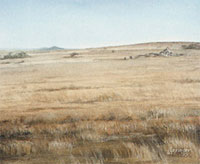 |
PIANURA |
|
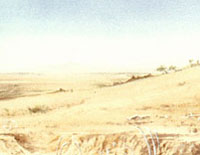 |
PIANURA
ONDULATA |
 |
COLLINA DOLCE MOLTIPLICATORE DI VIAGGIO: 4 |
|
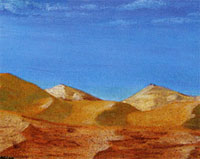 |
DESERTO SABBIOSO MOLTIPLICATORE DI VIAGGIO: 5 |
|
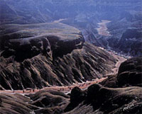 |
COLLINA IMPERVIA |
|
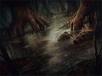 |
PALUDE MOLTIPLICATORE DI VIAGGIO: 7 |
|
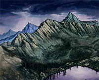 |
MONTAGNA |
|
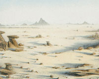 |
TERRENO ROCCIOSO |
|
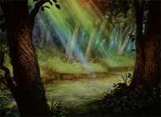 |
FORESTA LEGGERA |
|
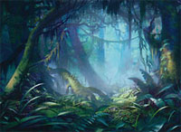 |
FORESTA PESANTE |
|
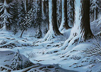 |
ZONA
INNEVATA |
|
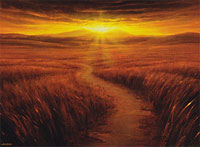 |
SENTIERI E STRADE |
 |
LE CONDIZIONI ATMOSFERICHE Le condizioni atmosferiche possono incidere sui tempi di viaggio in maniera considerevole. Oltre a poter risultare pericoloso, viaggiare con condizioni atmosferiche avverse è sicuramente più difficoltoso. In particolare, le condizioni atmosferiche avverse non incidono sul calcolo dei punti viaggio ma riducono di un valore percentuale variabile la velocità di spostamento delle creature.
|
| TIPOLOGIA DI CONDIZIONI ATMOSFERICHE | |
|
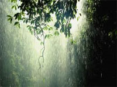 |
PIOGGIA |
|
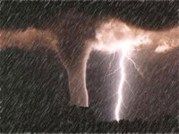 |
TEMPESTA |
|
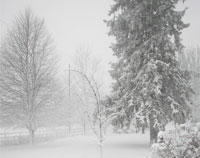 |
NEVE E GRANDINE |
|
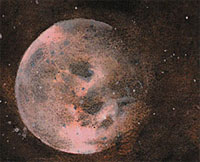 |
VIAGGIARE DURANTE LE
ORE NOTTURNE |
LA VELOCITA' DI SPOSTAMENTO
Si consideri che una creatura viaggia ad una velocità che si basa sul proprio fattore movimento. In particolare, una creatura potrà spostarsi di un ammontare di chilometri viaggio pari ad 1/4 del proprio movimento tattico in esagoni all'ora. Ad esempio, una creatura capace di spostarsi di 8 esagoni potrà percorrere in un'ora di cammino 2 chilometri viaggio. Una creatura, dunque, potrà viaggiare senza penalità per 12 ore al giorno. In pratica, potrà viaggiare fino a 6 ore consecutive, riposandosi per 4 ore, per poi proseguire per altre 6 ore consecutive, prima di doversi riposare per 8 ore consecutive.
FORZARE LA MARCIA
Una creatura può decidere di
forzare la marcia continuando a camminare per un numero superiore di ore
rispetto a quelle previste nella giornata. Appena una creatura decide di
forzare la marcia costei dovrà superare un tiro
salvezza su robustezza.
Se il tiro salvezza riesce la creatura
potrà proseguire per ulteriori 6 ore senza risposarsi e senza
rallentare. Qualora la creatura decida di proseguire ulteriormente dovrà
superare un tiro salvezza su robustezza con una penalità cumulativa di
-10% all'inizio di ogni nuovo periodo di 6 ore di marcia forzata. Solo
un periodo ininterrotto di 12 ore di riposo interromperà la marcia
forzata permettendo alla creatura di riprendere il cammino senza dover
effettuare alcun tiro salvezza.
Se il
tiro salvezza fallisce la
creatura risulterà esausta accumulando un grado di stanchezza fisica. La
creatura potrà continuare a marciare effettuando i suddetti tiri salvezza
(continuando ad applicare la penalità cumulativa di -10% all'inizio di ogni
nuovo periodo di 6 ore) ma, per ogni grado di stanchezza fisica acquisito riceverà la seguente penalità cumulativa:
-1 ai tiri per colpire, ai danni ed alle
prove di abilità;
-5% ai tiri salvezza su riflessi e robustezza (questa penalità non si
applica ai tiri salvezza previsti dalla marcia forzata per i quali sarà
applicato il modificatore su menzionato);
+1 alla Classe Armatura;
-20% alla propria velocità di spostamento (questa penalità non incide sul
movimento tattico ma solo sulla velocità di viaggio).
La creatura, dunque, può continuare a marciare accumulando vari gradi di
stanchezza fino ad un massimo di cinque. Raggiunto
il quinto grado la creatura sarà così debilitata che non riuscirà a proseguire
senza riposare (nutrendosi regolarmente) per un'intera giornata. Anche per
recuperare i precedenti stadi di stanchezza fisica la creatura dovrà riposare
rifocillandosi per un'intera giornata.